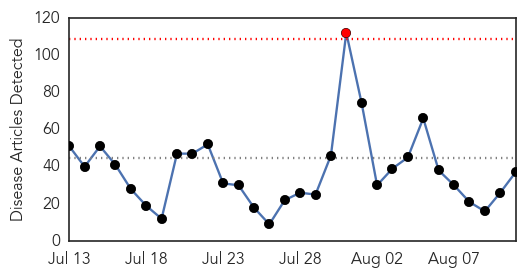

Toggle navigation
Early Warning
Daily Alerts
Ebola
Aug 11, 2015
Compare to:
-
Dengue Fever
Hemmorhagic Fever
Mold/Fungal Infection
Influenza
Meningitis
Pertussis / Whooping Cough
Middle East Respiratory Syndrome
Cholera
Hepatitis
Chikungunya
Yellow Fever
Bubonic Plague
West Nile Virus
Swine Flu
Measles
Unknown
Mumps
30 Day Trends
Web: 1
alerts
, 0
warnings
Twitter: 0
alerts
, 0
warnings
Top Articles:
1.000
Nigerian medics join Ebola response
0.998
Proposed Ebola biobank would strengthen African science
0.998
Health officials talk Ebola at Banner University Medical Center
0.998
Even after surviving Ebola, people still remain very sick for months afterwards
0.998
Sierra Leone News: Ebola epidemic can be over by end of the year -Bruce Aylward « Awoko Newspaper
0.997
Interview: Spanish doctor optimistic over tests on new Ebola vaccine - Xinhua
0.994
The Painful Lurch Toward The End Of Ebola In Guinea
0.992
Existing class of drugs may halt Ebola, Marburg viruses
0.973
Judge eases limits on nurse who treated Ebola patients
0.973
War on Ebola gets a shot in the arm as cooperation continues
0.963
China Vows to Support African Countries' Post-Ebola Recovery : China : Chinatopix
0.962
Beijing to maintain aid to Ebola-hit Guinea: China FM
0.957
Ebola prevention messages: How not to sound like a broken record - Sierra Leone
0.947
College students still largely misinformed about Ebola
0.911
Spotlight: China, Africa to join hands in post-Ebola cooperation - Xinhua
0.891
China pledges continued support for Ebola-hit African nations
0.889
Legionnaires' disease, plague claim victims in U.S.
0.886
Ellen complains to UN
0.872
China Promises More Investment in ‘Post-Ebola’ West Africa
0.837
Letter: Public health funding crucial to creating healthy communities
0.836
China pledges more support for Ebola-hit nations in West Africa
0.833
China pledges continued support for Ebola-hit Africa nations
0.827
China pledges continued support for Ebola-hit African nations
0.805
A Milestone in Africa: No Polio Cases in a Year
0.795
ONE – ON – ONE WITH VP VICTOR FOH IN EGYPT
0.789
China pledges continued support for Ebola-hit African nations
0.783
China pledges continued support for Ebola-hit Africa nations
0.776
Ongoing MRSA Epidemic in the United States Continues to be Ignored
0.748
Gov’t, Partners End UNFPA Coordination
0.697
China pledges continued support for Ebola-hit African nations
0.688
This Neighbourhood Watch Group is determined to keep Ebola out - Sierra Leone
0.684
Chinese FM praises cooperation in fighting against Ebola
0.679
Toll in N.Y. Legionnaires’ outbreak rises to 12
0.639
Here’s the $2-billion idea that could prevent Bill Gates’ biggest fear
0.629
Novavax offers hype and hope with an RSV 'breakthrough'
0.596
3 scientists have a brilliant plan to prevent what Bill Gates calls the biggest threat to the globe
0.574
First meeting of the Review Committee on the role of International Health Regulations in the Ebola outbreak and response
Top Tweets:
0.976
Emerging from the spectre of Ebola - PRI http://t.co/fKoZljJCow ebola EVD
0.974
FactSheet. Ebola Virus Disease OIEAnimalHealth zoonosis http://t.co/z6FiVgWUF1
0.954
In Sierra Leone, the dark comedy of Ebola carries a health message - Christian Science Monitor http://t.co/WquStDgNMj ebola EVD
0.922
Existing class of drugs may halt Ebola, Marburg viruses - Medical News Today http://t.co/7UwOjMmiAm ebola EVD
0.889
College students still largely misinformed about Ebola - Reuters http://t.co/QuqfbEZrRM ebola EVD
0.885
Man evaluated for Ebola at Bellevue found to not have deadly virus: authorities - New York Daily News http://t.co/GF2FJadNSE ebola EVD
0.842
Even after surviving Ebola, people still remain very sick for months afterwards - Quartz http://t.co/lsG7MO2OCj ebola EVD
0.842
Even after surviving Ebola, people still remain very sick for months afterwards - Quartz http://t.co/HPGABgIBL8 ebola EVD
0.822
Ebola research shows the value of vaccines - CNN International http://t.co/u5ChkEsYZF ebola EVD
0.764
Liberia Expands Cross Border Screening to Combat Spread of Ebola http://t.co/XMHOFykseK
0.711
In Sierra Leone, the dark comedy of Ebola carries a health message - Christian Science Monitor http://t.co/jlzZPpYyaL
0.709
Is the New Ebola Vaccine Really 100 Percent Effective? - The New Republic http://t.co/WWoisa9rtn ebola EVD
0.628
Emerging from the spectre of Ebola - PRI http://t.co/m6gY8NADSl
0.592
250 Ebola Survivors Get Clothing Support From Caritas Freetown - http://t.co/NaiI6Jl8yj http://t.co/DdTYzXrOlC ebola EVD
0.580
11 Aug - news pouch on avianflu avianinfluenza Ebola EbolaResponse MERS is here: http://t.co/iAQcMpiB1p
Web/News Articles

Tweets
Article Locations
Article Confidences